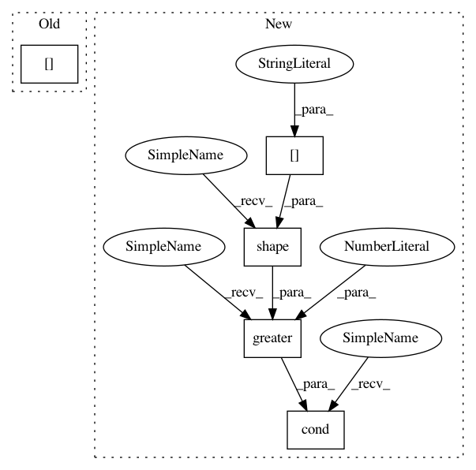

58086fa0a4fdd7c72a9ca51746a754fbd6644b91,models/official/detection/dataloader/tf_example_decoder.py,TfExampleDecoder,decode,#TfExampleDecoder#Any#,90
Before Change
"width": parsed_tensors["image/width"],
"groundtruth_classes": parsed_tensors["image/object/class/label"],
"groundtruth_is_crowd": is_crowd,
"groundtruth_area": parsed_tensors["image/object/area"],
"groundtruth_boxes": boxes,
}
if self._include_mask:
After Change
image = self._decode_image(parsed_tensors)
boxes = self._decode_boxes(parsed_tensors)
areas = self._decode_areas(parsed_tensors)
is_crowds = tf.cond(
tf.greater(tf.shape(parsed_tensors["image/object/is_crowd"])[0], 0),
lambda: tf.cast(parsed_tensors["image/object/is_crowd"], dtype=tf.bool),
lambda: tf.zeros_like(parsed_tensors["image/object/class/label"], dtype=tf.bool)) // pylint: disable=line-too-long
if self._include_mask:
masks = self._decode_masks(parsed_tensors)
In pattern: SUPERPATTERN
Frequency: 3
Non-data size: 5
Instances
Project Name: tensorflow/tpu
Commit Name: 58086fa0a4fdd7c72a9ca51746a754fbd6644b91
Time: 2019-08-06
Author: gardener@tensorflow.org
File Name: models/official/detection/dataloader/tf_example_decoder.py
Class Name: TfExampleDecoder
Method Name: decode
Project Name: tryolabs/luminoth
Commit Name: 2feaa30964f4393ce65a394253e180cb8f6e0dc1
Time: 2017-09-05
Author: iangtayler@gmail.com
File Name: luminoth/datasets/object_detection_dataset.py
Class Name: ObjectDetectionDataset
Method Name: _augment
Project Name: tensorflow/tpu
Commit Name: e2854fe95203e52bd2a5967b9e5cd9b2abbdf1bf
Time: 2019-08-05
Author: pengchong@google.com
File Name: models/official/detection/dataloader/tf_example_decoder.py
Class Name: TfExampleDecoder
Method Name: decode